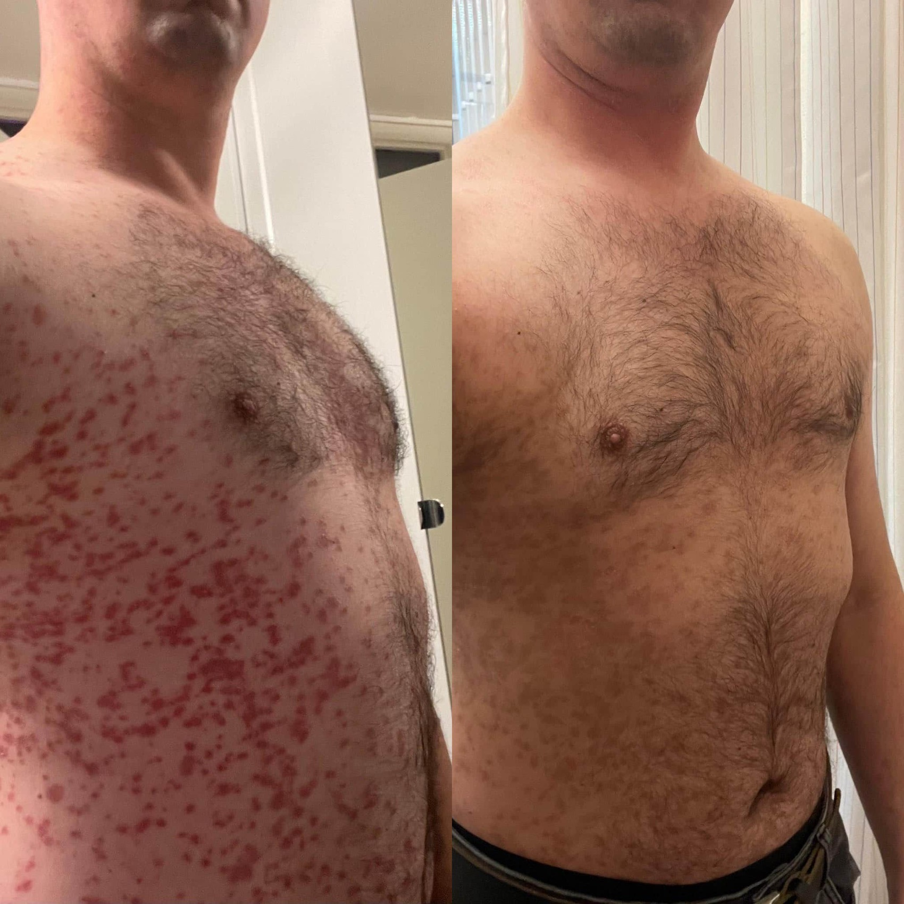
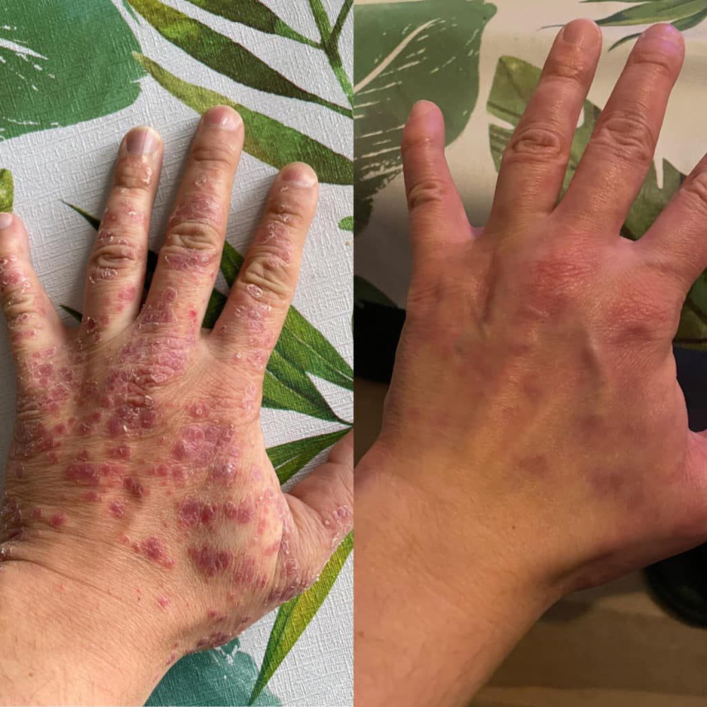

Erwan — Psoriasis
de l'avant à 1 mois{kind=link}
›
Semaine 1
{kind=link}
{kind=link}
−4 kg, en forme, nuits réparatrices — le psoriasis s'améliore aux coudes.
›
Des vraies personnes, suivies dans le temps. Photos avant/après, vidéos, audios, messages — rien de retouché, rien de scénarisé.
−4 kg, en forme, nuits réparatrices — le psoriasis s'améliore aux coudes.
Psoriasis presque disparu — et le déclic des huiles oméga-6.
Même après un écart sucre : 5× moins de démangeaisons, et ça reste sec. Lactose presque disparu.
Psoriasis, intolérance au lactose et troubles intestinaux résorbés. « Ce que la médecine classique n'a pas su faire. »
Il dort enfin toute la nuit, inflammation atténuée, transit réglé.
« Mon corps a changé en mieux, c'est une évidence. » −6 kg, plus de brûlures d'estomac.
« Un cauchemar sans nom, dans le dos, sur le visage. »
« Plus du tout de boutons, la peau toute douce. »

⤢
⤢« Je me gratte beaucoup moins — c'est que du positif. »
Eczéma · 2 mois« Je ne mets plus de cortisone du tout, plus de pommade. »
Psoriasis · 2 semaines{kind=link}
{kind=link}
{kind=link}
{kind=link}
{kind=link}
{kind=link}
{kind=link}
{kind=link}